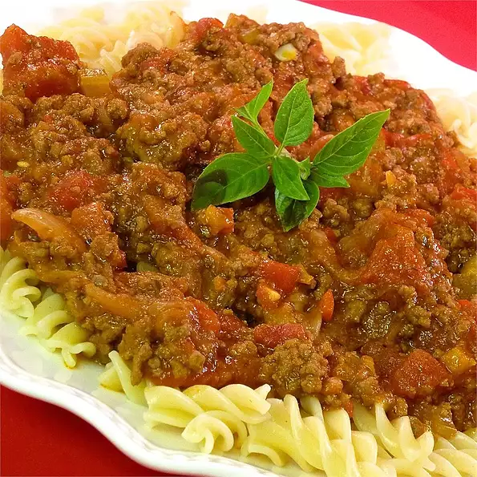

Spaghetti bolognese

Description
A rich, delicious, traditional spaghetti bolognese that will really
impress your partner! So simple yet so yummy!
ingredients
- 2 tablespoons olive oil
- 3 large onions, sliced
- 3 cloves garlic, chopped
- 1 red bell pepper, chopped
- 2 pounds lean ground beef
- 1 cup beef broth
- 2 (14 ounce) cans peeled and diced tomatoes with juice
- 1 cup red wine
- 1 (6 ounce) can tomato paste
- 1 stalk celery, chopped
- 2 bay leaves
- 1 tablespoon Italian seasoning
steps
- Heat olive oil in a large skillet over medium heat.
Saute onions and garlic until onions are tender.
Stir in red bell pepper and saute 2 minutes.
- Place ground beef in the skillet and cook over medium high heat
until evenly brown. Stir in beef broth, diced tomatoes,
wine and tomato paste. Bring to a boil and add celery,
bay leaves and Italian seasoning.
-
Reduce heat and simmer for 1 hour, or until sauce thickens.